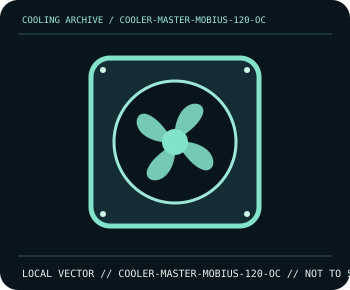

[ INDIVIDUAL COMPONENT // COOLING ]
Cooler Master Mobius 120 OC
High-speed 120 mm PWM fan with a Loop Dynamic Bearing and a maximum speed of 3200 rpm.

IDENTIFICATION: Confirm the complete model, revision, included mounting hardware, and host requirements against the manufacturer documentation before installation.
Manufacturer specifications
| Catalog subcategory | Case and radiator fans |
|---|---|
| Exact model | Cooler Master Mobius 120 OC |
| Frame | 120 × 120 × 25 mm. |
| Speed and performance | PWM range up to 3200 rpm; rated up to 75.2 CFM and 4.75 mm H₂O static pressure. |
| Bearing and acoustics | Loop Dynamic Bearing; maximum noise rating 22.6 dBA per Cooler Master. |
| Compatibility | Standard 120 mm mounting footprint; connect 4-pin PWM to a header/controller whose current capacity meets the product manual. |
Compatibility and installation
Use the fan as a high-speed PWM unit and set a conservative initial curve. Verify header current limits, airflow direction arrows, and clearance to adjacent fins/radiator; do not infer low-noise behavior at maximum RPM from the published maximum rating.
- Disconnect system power before installation or rewiring, and follow the exact model manual.
- After assembly, confirm fan/pump operation and monitor temperatures before sustained workload.
Manufacturer source
- Cooler Master — Mobius 120 OC product specificationsManufacturer product documentation; check the current model revision, package contents, and local socket kit before purchase or installation.
This static catalog entry is an identification aid, not a compatibility guarantee; fit and ratings can vary by revision, mounting kit, and host configuration.